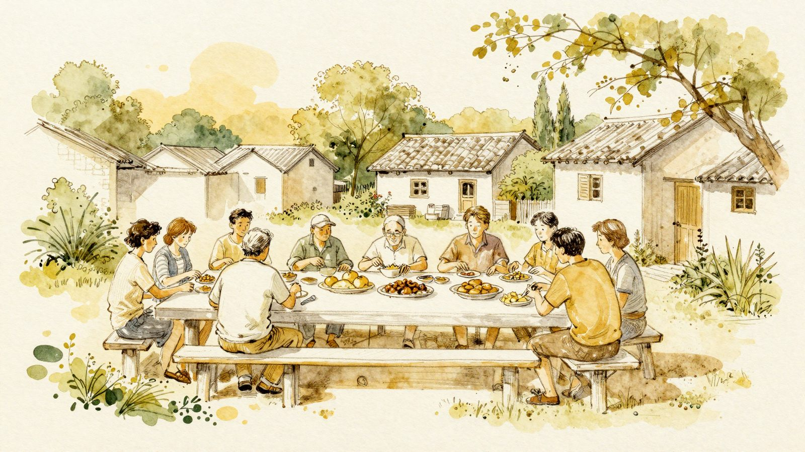
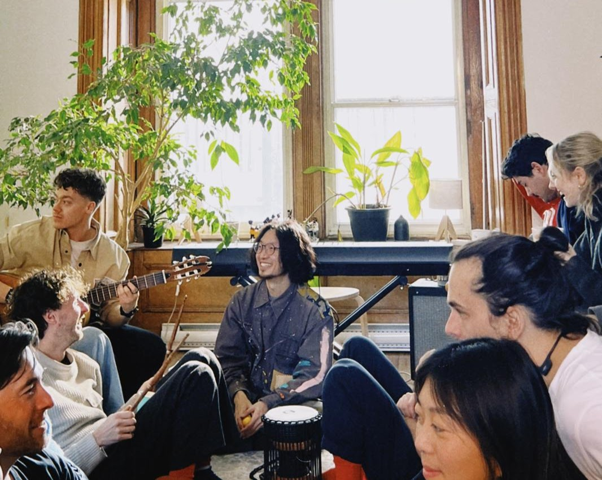
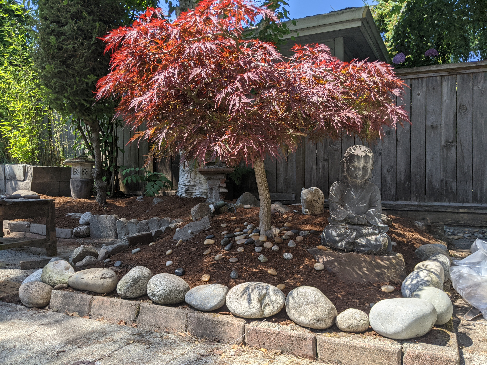
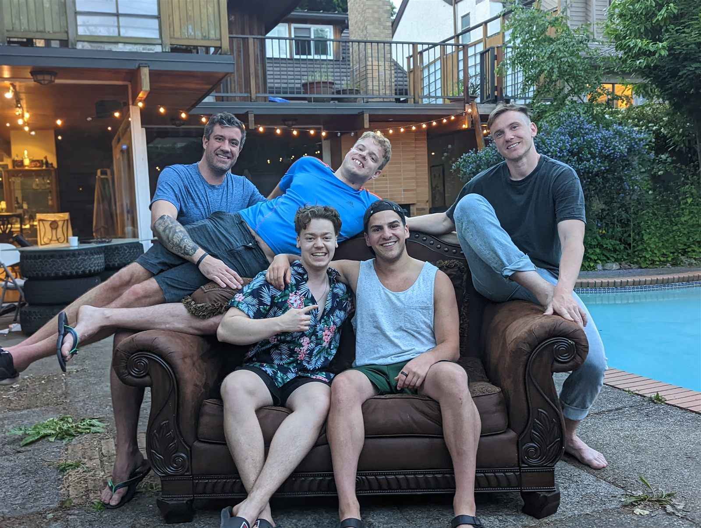
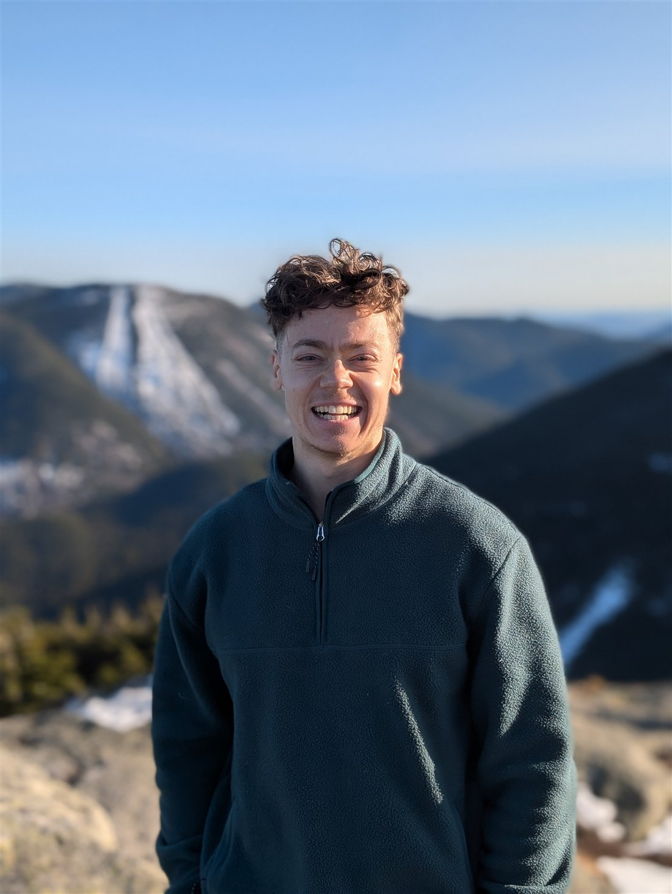

Homes where strangers become a household, elders stay at the centre of life, and the table is long enough for everyone.




Not renderings — my houses. Montreal & Vancouver, 2020 to now.
13 assumptions about housing and family we inherited without asking — and the cracks in every one.
12 ways to live together, mapped on 8 axes — ecovillages to hacker houses — with field guides and real places to visit.
A growing bank of patterns: name the life you want, then design backwards — from nooks to neighbourhoods.

For five years I've turned ordinary houses into communities of entrepreneurs in Montreal and Vancouver — designing every room around how people actually live, work and connect.
Building something in the co-living world — or looking for someone who designs for how people actually live?
pierreantoinedescoteaux@gmail.com →